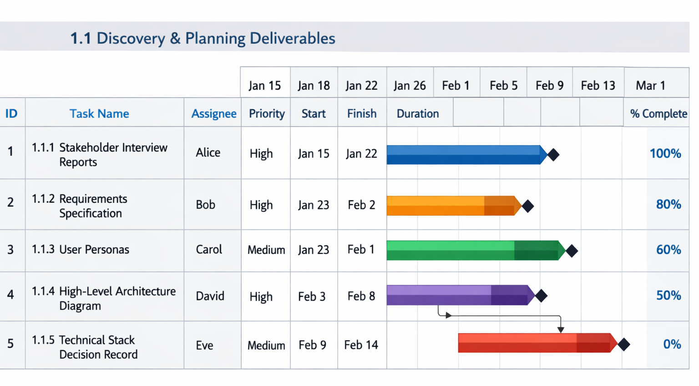
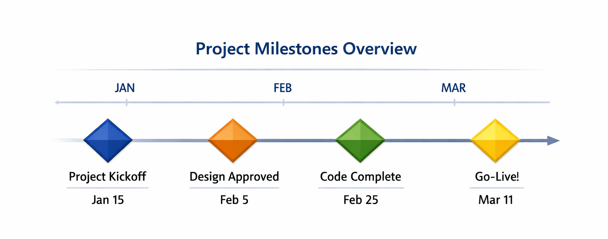
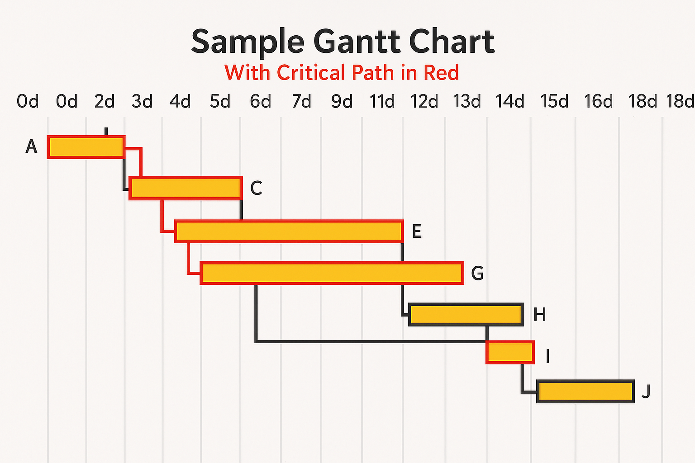

A Gantt chart is a visual project management tool that illustrates a project schedule over time. It displays tasks, durations, dependencies, and progress in a horizontal bar chart format, allowing project managers to see the complete timeline of their project at a glance.
Named after Henry Gantt who pioneered this technique in the 1910s, the Gantt chart has evolved from hand-drawn paper charts to sophisticated digital tools, yet remains one of the most widely used and valuable project management techniques over a century later.
A Gantt chart answers five critical questions for every project manager:

| Component | Description | Visual Representation |
|---|---|---|
| Tasks / Work Packages | Individual activities derived from the WBS | Listed vertically on the left |
| Timeline | Calendar scale (days, weeks, months) | Horizontal axis across the top |
| Bars | Duration of each task | Horizontal colored bars |
| Milestones | Key events or deliverables (zero duration) | Diamond symbols (◆) |
| Dependencies | Relationships between tasks | Arrows connecting bars |
| Progress | Completion percentage tracked over time | Shading or fill within bar |
| Resources | Team members assigned to each task | Labels or color-coding |
| Critical Path | Longest sequence of dependent tasks | Highlighted bars (often in red) |
A basic Gantt chart structure looks like this:
| Purpose | Description | Value to Project Manager |
|---|---|---|
| Project Planning | Map out all tasks and establish realistic timelines | Creates achievable, well-sequenced schedules |
| Progress Tracking | Monitor actual vs. planned performance | Identifies delays early for corrective action |
| Team Communication | Share visual timeline with team members | Aligns everyone on priorities and deadlines |
| Stakeholder Reporting | Present progress to executives and clients | Builds trust and manages expectations |
| Resource Management | Visualize who is working on what and when | Prevents overallocation and burnout |
| Critical Path Analysis | Identify tasks that directly impact finish date | Focuses attention on what matters most |
| What-If Scenarios | Model the impact of changes or delays | Enables informed decision-making |
Start with your Work Breakdown Structure. Each work package at the appropriate level becomes a task in your Gantt chart. The WBS defines WHAT needs to be built; the Gantt chart defines WHEN it will be built.
| WBS Code | Task Name | Deliverable |
|---|---|---|
| 1.3.1 | User Authentication Screens | Login and registration pages |
| 1.3.2 | Dashboard Interface | Main landing page after login |
| 1.4.1 | User Authentication API | Backend authentication endpoints |
| 1.4.2 | Task CRUD API | Create, read, update, delete endpoints |
No task exists in isolation. Dependencies define the logical relationships and sequence of work.
| Dependency Type | Symbol | Meaning | Real-World Example |
|---|---|---|---|
| Finish-to-Start (FS) | → | Task B cannot start until Task A finishes | Cannot begin coding until design is approved |
| Start-to-Start (SS) | → | Task B cannot start until Task A starts | Testing can begin when coding begins |
| Finish-to-Finish (FF) | → | Task B cannot finish until Task A finishes | Documentation cannot finish until coding finishes |
Use reliable estimation techniques to determine how long each task will take.
| Estimation Technique | Description | Formula / Approach |
|---|---|---|
| Expert Judgment | Consult experienced team members | Interviews or workshops |
| Analogous Estimating | Compare to similar past projects | Historical data adjustment |
| Parametric Estimating | Use statistical relationships | Hours per unit × number of units |
| Three-Point (PERT) | Account for uncertainty | (O + 4M + P) / 6 |
Allocate specific team members to each task. Consider availability, skills, and workload.
| Task | Assigned Resource | Allocation | Skills Required |
|---|---|---|---|
| API Development | Sarah (Backend Developer) | 6 hours/day | Node.js, Database |
| UI Design | Michael (UX Designer) | 4 hours/day | Figma, User Research |
| Database Setup | James (DBA) | Full-time | SQL, Data Modeling |
A milestone is a significant event, achievement, or decision point in a project. Milestones have zero duration—they represent a moment in time, not a span of work.

| Aspect | Description |
|---|---|
| Duration | Zero (0 days) |
| Purpose | Marks key achievements, transitions, or decisions |
| Visual | Diamond symbol (◆) on Gantt charts |
| Dependencies | Can have predecessors and successors |
| Milestone Type | Description | Examples |
|---|---|---|
| Start Milestone | Marks project initiation | Project Kickoff, Charter Approved |
| Completion Milestone | Marks deliverable completion | Design Approved, Code Complete |
| Phase Transition | Marks end of one phase, start of next | Requirements Signed Off, UAT Begins |
| Approval Milestone | Requires stakeholder sign-off | Budget Approved, Scope Frozen |
| External Milestone | Outside project control | Vendor Delivery, Regulatory Review |
The critical path is the longest sequence of dependent tasks that determines the project's minimum completion time.

Critical Path Example:
Task A (3 days) → Task C (4 days) → Task E (5 days) = 12 days (CRITICAL PATH)
Task B (2 days) → Task D (3 days) = 5 days (FLOAT = 7 days)
| Term | Definition | Importance |
|---|---|---|
| Critical Path | Longest path through the network | Determines project duration |
| Critical Tasks | Tasks on the critical path | Must finish on time or project delays |
| Float (Slack) | Amount a task can delay without affecting finish | Non-critical tasks have flexibility |
| Near-Critical Path | Path with little float | Can become critical if delayed |
A baseline is the original approved plan against which performance is measured. It serves as a fixed reference point for tracking progress.
A Gantt chart is a living document that requires regular maintenance to remain valuable.
| Frequency | Actions | Outputs |
|---|---|---|
| Daily | Team reports progress; identify blockers | Status updates |
| Weekly | Update Gantt; review variances; adjust forecasts | Progress report; updated chart |
| Monthly | Re-forecast; communicate to stakeholders | Status presentation; revised timeline |
| As Needed | Respond to major changes or delays | Change requests; recovery plans |
| Tool | Purpose | When to Use |
|---|---|---|
| WBS | Defines WHAT needs to be done | Before scheduling; decomposition |
| Gantt Chart | Defines WHEN work happens | During planning and execution |
| Network Diagram | Shows logical relationships | For dependency analysis |
| Kanban Board | Manages workflow | For ongoing, iterative work |
| Burndown Chart | Tracks remaining work | In Agile sprints |
| Resource Histogram | Shows resource allocation | For workload balancing |
A Gantt chart transforms your WBS into a visual timeline, showing you exactly what needs to happen, when, and by whom—so you can plan confidently, track effectively, and communicate clearly throughout your project.
| Aspect | Description |
|---|---|
| What It Is | A horizontal bar chart showing project schedule over time |
| Primary Purpose | Plan, track, and communicate project timelines |
| Key Elements | Tasks, duration, dependencies, milestones, resources, progress |
| When to Use | Projects with defined tasks, sequential work, need for visual tracking |
| Best Paired With | WBS (for tasks) and Risk Register (for issues) |
| Frequency of Update | Weekly for active projects |
| Audience | Project team, stakeholders, executives (summary view) |